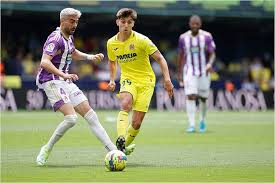
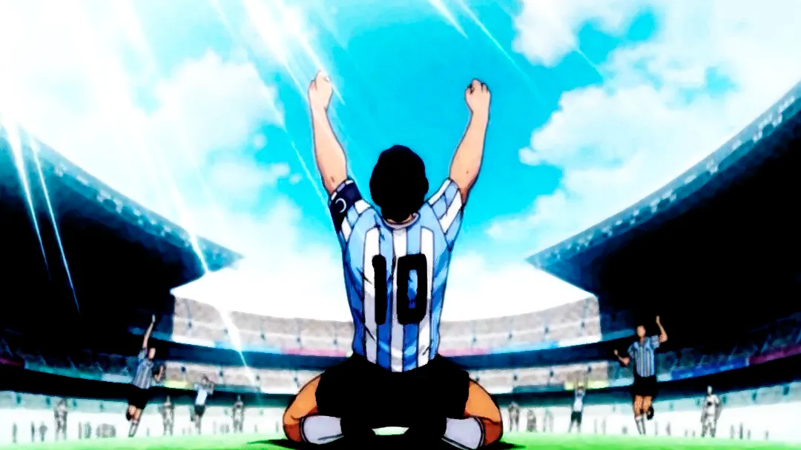
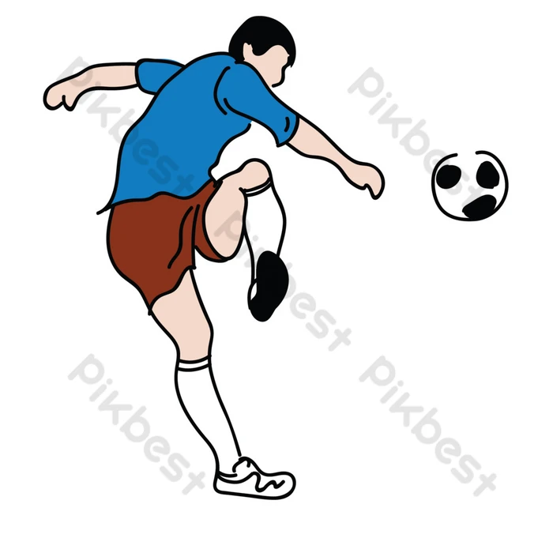

la vida del joven deportista
En esta inspiradora biografía, seguiremos el viaje de un apasionado joven que sueña con convertirse en futbolista profesional. A través de sus desafíos, sacrificios y triunfos, cómo este hombre persigue su pasión por el fútbol y lucha por alcanzar la grandeza en el mundo del deporte más popular del planeta.
Los Inicios de una Pasión En este capítulo, exploraremos los primeros años del joven futbolista , desde que descubrimos su amor por el balón en los campos de juego de su vecindario. Aprenderemos cómo su pasión por el fútbol se convirtió en una obsesión y cómo su determinación lo impulsó a perseguir su sueño de convertirse en un jugador profesional.
El Camino de Entrenamiento Aquí, acompañaremos al protagonista en su arduo camino de entrenamiento y desarrollo futbolístico. Conoceremos cómo enfrentó obstáculos como la competencia, las lesiones y los momentos de duda, y cómo cada desafío lo hizo más fuerte y decidió mejorar sus habilidades.
La Escalada en el Mundo del Fútbol En este capítulo, seguiremos al joven futbolista mientras sube la escalera de las ligas juveniles y equipos locales. Descubriremos cómo sus actuaciones destacadas y su ética de trabajo le abren oportunidades para unirse a equipos más grandes y prestigiosos, acercándolo cada vez más a su sueño de ser profesional.